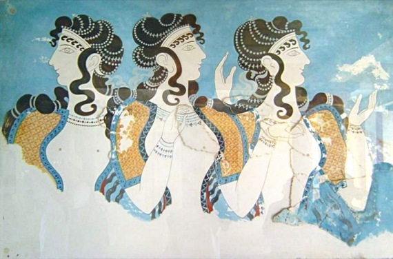

Az Ókori Görögország történelme
A minoszi civilizáció
A legkorábbi civilizáció, amely a mai Görögország területén feltűnt, a Kréta szigetén virágzó minoszi civilizáció volt kb. i. e. 2500 és i. e. 1450 között. Nagyon keveset tudunk a minoszi emberekről, még a nevük is modern kori névadás eredménye Minósz, a legendás krétai király után. Úgy tűnik, nem indoeurópai nép(ek) voltak, nyelvük, az eteokrétai írása lehet a megfejtetlen lineáris A írás. Alapvetően tengeri kereskedő nép voltak. Bár eltűnésük oka bizonytalan (bár egyesek úgy gondolják, a Théra vulkánkitörése vetett véget civilizációjuknak), mindenesetre egy, a szárazföld felől érkező mükénéi görög invázió zárta le történetüket.
A mükénéi Görögország
A mükénéi Görögország (nevezik bronzkori Görögországnak is) a késő helládikus bronzkor civilizációja. A görögök Égei-tengerhez való érkezésével kezdődött i. e. 1600 körül, és a bronzkori civilizáció i. e. 1100 körüli összeomlásával végződött. Homérosz epikája és a görög mitológia nagy része erről a történelmi korszakról szól. Ez a periódus nevét a peloponnészoszi Argolisz északnyugati részén található Mükénéről kapta, ami ma fontos régészeti lelőhely
A mükénéi civilizációt egy katonai arisztokrácia irányította. A mükénéiek i. e. 1400 körül kiterjesztették uralmukat a minószi civilizáció központjára, Krétára, és átvették egyik írásukat, a lineáris A-t a saját korai görög nyelvük számára. A mükénéi írást lineáris B-nek hívjuk.
A mükénéi nemeseket kaptársírokba (tholoi) temették. Ezek nagy kör alaprajzú kamrák voltak magas boltozatos tetővel, kővel szegett széles bejárattal. Gyakran temettek el az elhunyttal tőrt vagy más hadifelszerelést. A nemeseket gyakran temették aranymaszkkal, tiarával, páncéllal és drágakővel díszített fegyverekkel. Halottaikat ülve temették, és a nemesek egy részét mumifikálták.
A mükénéi civilizáció i. e. 1100 körül összeomlott. Számos várost kifosztottak és az egész környék a történészek által adott néven az ún. sötét korszakba merült. Ezalatt az időszak alatt Görögországot a népesség és írásbeliség hanyatlása jellemezte. A görögök maguk ezért a hanyatlásért a görögök egy újabb csoportjának beözönlését, a dór inváziót tették felelőssé, bár ezt a nézetet csak csekély számú régészeti lelet támasztja alá.